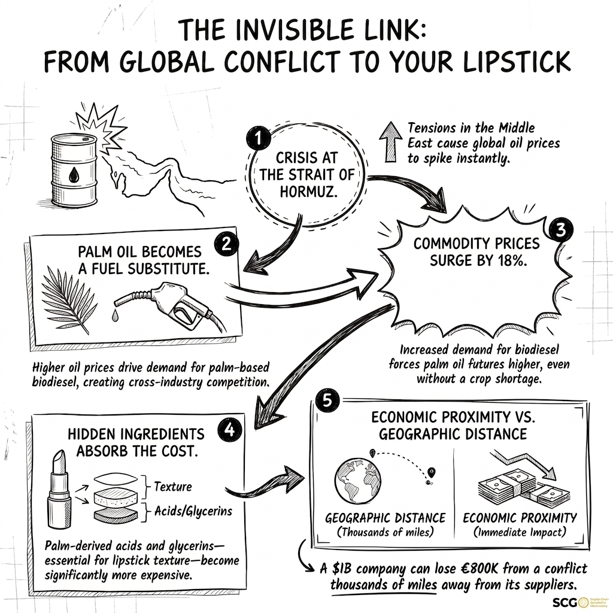

A lipstick tube seems far removed from maritime tensions near Iran. Look beyond the label, however, and the distance begins to collapse. The ingredients inside that lipstick connect cosmetics companies to palm plantations in Southeast Asia, fertilizer and natural gas markets, biodiesel policy, and one of the world’s most consequential maritime chokepoints.
This connection exposes a weakness in how many companies assess geopolitical risk. Executives tend to map where their direct suppliers and factories are located. That view can miss the common resources and infrastructure buried several tiers beneath them. A disruption does not need to stop a cosmetics factory to alter its economics.
The ingredient list tells only part of the story
The Strait of Hormuz handles roughly one-fifth of globally traded oil. When military tensions intensified in the region in early 2026, energy markets quickly repriced the risk. The immediate concern was oil, but the effects moved well beyond petroleum companies and firms operating in the Middle East.
Palm oil illustrates how that transmission occurs. Its derivatives are embedded in cosmetics and personal-care products. Glyceryl stearate, cetyl alcohol, and palmitic acid can all trace back to palm oil through different stages of chemical processing. Move farther upstream and those separate ingredient chains converge: palm oil depends on plantations, plantations depend on fertilizer, and fertilizer production depends heavily on natural gas.
To a cosmetics buyer, these may appear to be distinct purchases from distinct suppliers. Economically, they may share the same underlying vulnerability.

Distance can mislead
Thousands of miles apart. Economically close.
Hormuz sits far from the palm-producing economies of Indonesia and Malaysia. The connection is economic: energy prices change biodiesel incentives, which change competition for palm oil.

Small ingredient, material exposure
Higher oil prices made palm-based biodiesel more attractive. Indonesia’s increasing use of palm oil for biodiesel directed more supply toward the energy sector, while concerns about future availability intensified competition among industries. The buyer analysis behind this article shows crude palm oil prices rising approximately 18 percent between January and March 2026.
Cosmetics and healthcare account for less than 5 percent of global palm oil consumption. Their relatively small share does not protect them. These industries compete for the same commodity with much larger food and energy markets. They are price takers in a contest shaped by forces far outside the beauty sector.
At the product level, palm-derived inputs may represent only about 2 to 4 percent of a lipstick’s consumer price. That small percentage can look immaterial. Scale changes the calculation. Several ingredients may depend on the same feedstock, and many products across a portfolio may contain those ingredients. What appears diversified at the supplier level can remain concentrated at the raw-material level.
Questions worth asking before the next disruption
- Do several ingredients ultimately depend on the same raw material?
- Which product lines carry the greatest cumulative exposure?
- Are alternative feedstocks technically and commercially viable?
- How quickly could formulations change if supply tightened?
Risk travels through connected markets
Conventional risk maps focus on direct relationships: who supplies the company, where production occurs, which transportation lanes are used, and how much inventory is available. Those measures remain essential, but they do not reveal shared exposure to energy systems, commodity substitution, industrial policy, or infrastructure several tiers upstream.
The lipstick example warns against confusing geographic distance with economic insulation. The Strait of Hormuz is closer to a cosmetics portfolio than it appears because risk travels through connected markets, not only through visible supplier relationships. Companies that map only what they buy directly will continue to be surprised by vulnerabilities already embedded in their products.
Source note. Market information and buyer estimates are drawn from the supplied cosmetics-industry analysis, including Fastmarkets’ crude palm oil assessment for September 2025 through June 2026. The company-level estimate is illustrative and should be interpreted in light of firm-specific formulations, purchasing volumes, contracts, and hedging arrangements.
← Back to the Observatory